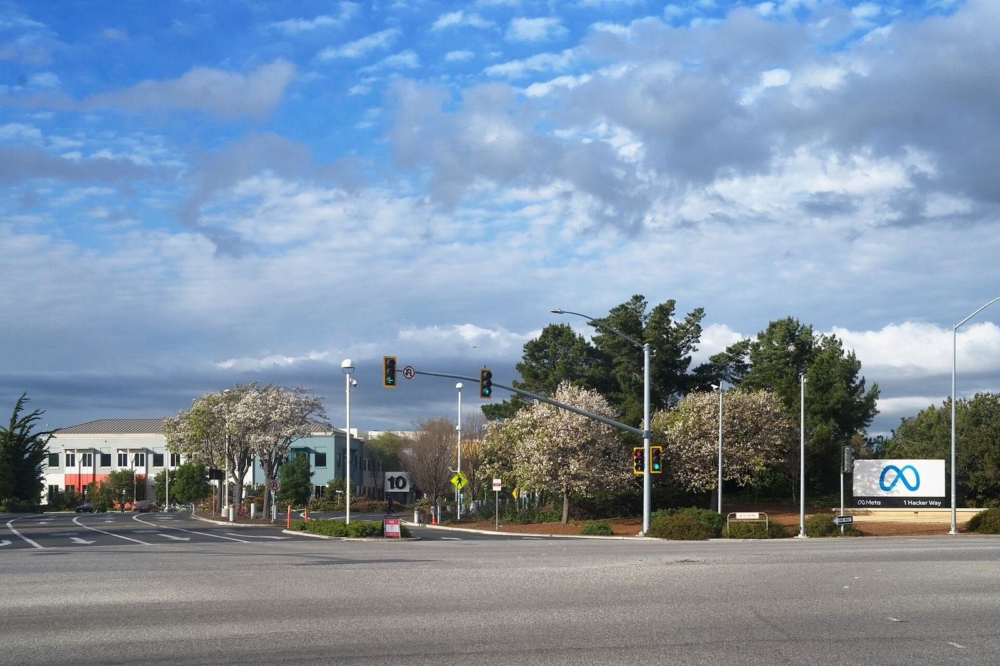

Meta 推出最小、最高效模型 Muse Ember：面向代理重复执行的工具调用、编码子任务与长文档解析；定价每百万 token 0.10 / 0.50 美元；muse-ember-1.0 上线 Meta Model API 与 Muse Code，1M 上下文


Meta AI Research 于 2026 年 11 月 9 日发文，推出 Muse Ember，称其为公司最小、最高效的模型，面向复杂推理执行以及代理整天重复的工作：工具调用、编码子任务、路由、抽取与长文档解析。Muse Ember 即日起在 Meta Model API 与 Muse Code 以 muse-ember-1.0 提供，定价为每百万输入 token 0.10 美元、每百万输出 token 0.50 美元；缓存输入为每百万 token 0.004 美元。上下文窗口为 1M token，输出最长 512K token，并支持 Responses API。
Muse Ember 在任一推理设置下，单位美元智力高于 Claude Haiku 5.5 或 GPT-6 Luna：约以三分之一成本达到 Haiku 的最佳分数，并优于 Luna 的所有设置
公司称，按 Artificial Analysis 原始结果绘制的「智力相对每任务成本」图显示，Muse Ember 位于完整排行榜的效率前沿：没有模型以更低的每任务成本取得更高分数。评测表（均取 max 推理）列出：AutomationBench-AA 上 Ember 得 37.8，对照 Haiku 5.5 的 13.9 与 GPT-6 Luna 的 20.2；Agents' Last Exam 为 61.6，对照 57.0 与 57.1；Artificial Analysis Index 上 Ember 与 Haiku 均为 36，Luna 为 28。FrontierCode 2.0-AA 上则是 Haiku 领先（34.9），Ember 为 27.2，Luna 为 25.2。文中注明部分分数来自 Artificial Analysis 2026 年 11 月 9 日发布的 Intelligence Index v5，部分来自 Meta 内部评测。
Muse Ember 原生理解文本、图像、音频与视频。公司建议：最难的问题搭配 Muse Wonder——由 Wonder 做规划，Ember 承担批量执行。Meta 写道，Ember 是首个用 Muse Wonder Full 训练的专用模型，用以补齐产品组合：Wonder 应对最难问题，Spark 面向编码与代理工作流，Ember 则把可重复的编码与代理任务成本降到约每项 Artificial Analysis 任务 0.14 美元（对照 Muse Spark 1.3 的 2.39 美元）。对超过 200K token 的更长提示，定价为每百万输入 0.30 美元、缓存输入 0.012 美元、输出 1.50 美元。Muse Ember、Muse Spark 与 Muse Wonder 现已在 Google Cloud 与 Oracle Cloud 上提供。发布前，Meta 称按 Meta Superintelligence Scaling Framework 评估了化学与生物、网络安全及失控风险，各项均低于该框架的高风险阈值。
摘记，不是官方媒体。智力指数、分项分数与每任务成本均出自 Meta 官方博文及其引用的 Artificial Analysis / 内部评测；未独立复现。定价适用于文中所述提示长度档位，以官方原文为准。